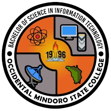

Where Skills Meet Reality: My Internship Journey
“Experience is the best teacher, and every task completed during OJT is a step toward a better future.”
Student Profile
Name: Carl John A. Reyes
School ID: MA22-IT-02753
Course: BSIT
Internship Month: January to April 2026
Year & Section: 4E BSIT
Table of Contents
Chapter I
Introduction
Chapter II
Company Profile
Chapter III
Work Experiences
Chapter IV
Assessment
Appendices
Documents
Acknowledgement
First and foremost, I would like to thank the Almighty God for giving me strength, guidance, and wisdom throughout my On-the-Job Training (OJT) journey.
I would like to express my sincere gratitude to Dr. Khris Usita for his guidance, support, and valuable knowledge that contributed to my learning experience.
I am also thankful to Marites Escultor for her encouragement, patience, and continuous support during my internship.
My heartfelt appreciation goes to Ariel Manuel for his supervision, assistance, and for helping me develop my technical skills.
I would like to thank Rhenz Rafael for sharing his knowledge and providing guidance that helped me improve in my tasks.
I also extend my gratitude to Rommel Bacuel for his support and for being part of my learning journey during my OJT.
I would also like to thank Occidental Mindoro State College – San Jose Campus for giving me the opportunity to gain real-world experience in a professional environment.
Lastly, I am deeply grateful to my family and friends for their unwavering support, motivation, and encouragement throughout my OJT journey.
Student Trainee Prayer
Heavenly Father, I humbly come before You as I begin and continue my On-the-Job Training journey.
Thank You for the opportunity to learn, grow, and experience the real world beyond the classroom. Guide me in every task that I perform, and help me carry out my responsibilities with honesty, discipline, and dedication.
Grant me wisdom to understand the things I need to learn, patience in facing challenges, and strength whenever I feel tired or discouraged. Help me to stay focused, motivated, and committed to improving myself each day.
Teach me to respect my supervisors, instructors, and co-workers, and to work harmoniously with others. May I always show humility, kindness, and professionalism in all my actions.
Help me overcome my fears and doubts, and give me the courage to step out of my comfort zone. Let every mistake be a lesson, and every success be a reminder of Your guidance.
May this training not only improve my skills but also shape my character as a responsible and hardworking individual. Prepare me for the future career that You have planned for me.
Thank You for Your continuous blessings, protection, and love. I offer all my efforts and achievements to You.
Amen.
Personal Philosophy
Growth through Learning and Purpose
I believe that success is achieved through continuous learning, discipline, and perseverance. Life is a constant process of growth, and every experience—whether success or failure—serves as an opportunity to learn and improve.
I see challenges not as obstacles, but as opportunities to become stronger, wiser, and more capable. Each difficulty faced helps build resilience and prepares me for greater responsibilities in the future.
I also believe that success becomes more meaningful when it is shared with others, especially with family and the community. Achievements are not only personal victories but also a way to inspire and contribute to the people around me.
As I continue my journey, I strive to live with honesty, humility, patience, and respect. These values guide my actions and decisions, helping me become not only a skilled professional but also a responsible and principled individual.
Career Plan
Immediate Goals
After graduation, I plan to secure a stable IT-related position where I can apply the knowledge and skills I have gained during my academic years and internship. I aim to gain real-world experience and further develop my technical and professional abilities.
Skill Development
I am committed to continuously improving my skills in programming, web development, database management, and troubleshooting. I also plan to explore new technologies and stay updated with industry trends to remain competitive in the field of Information Technology.
Long-Term Vision
My long-term goal is to become a professional Web Developer or Application Developer who can create efficient, user-friendly, and innovative systems that contribute to business and community development.
Commitment
I am willing to start from entry-level positions, work hard, and continuously learn and grow. I believe that dedication, perseverance, and a positive mindset will help me achieve my career goals and become a successful IT professional in the future.